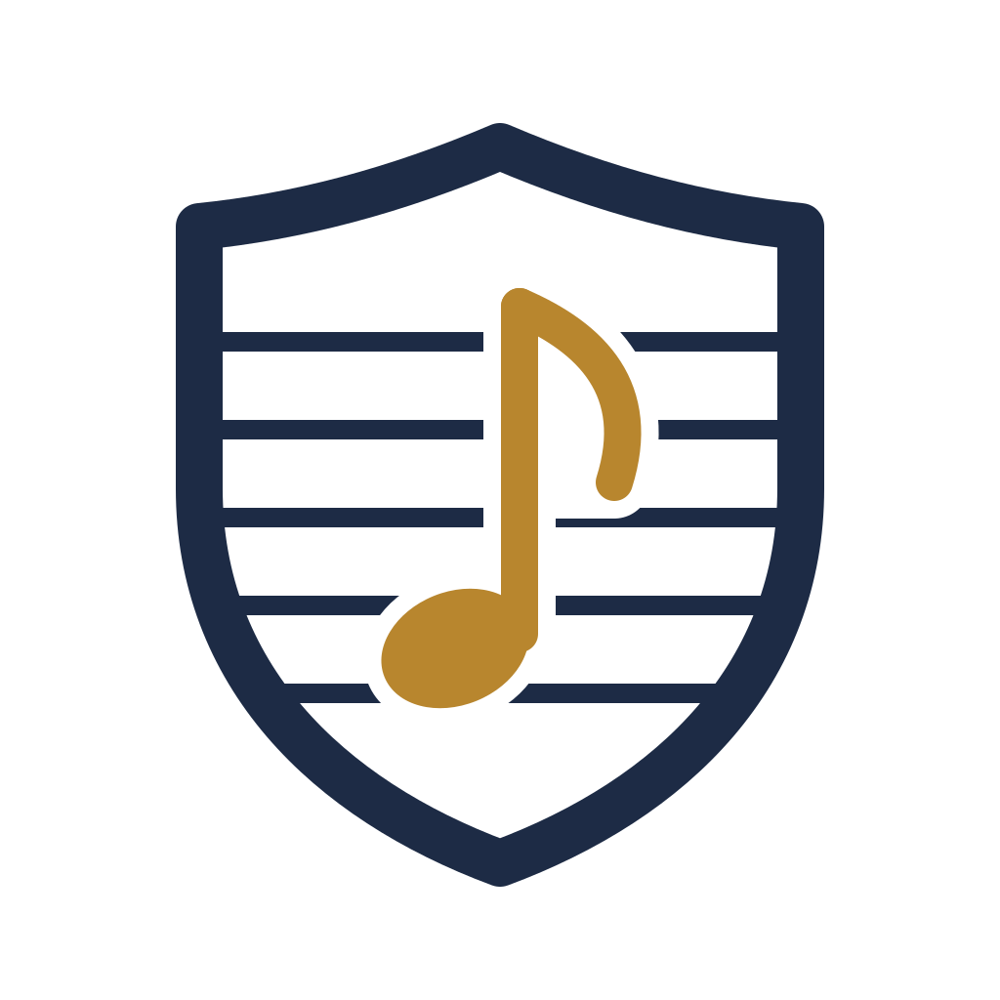

Only your part
Members see the parts for the instruments they play in their ensembles. Leaders see everything, including the score. No more shared folders with a hundred files.

Your sheet music, sorted and at hand.
A free, self-hosted sheet music library for music schools, orchestras, bands and choirs. Upload scores, split them into parts – and every player sees exactly the parts they need, on phone, tablet or music stand, online and offline.
In development · first pilot with a music school in Brandenburg
Drop in PDFs – a full score, single parts, or a scan with everything in one file.
Pick the pages of each part. notenwart recognises “Trompete_2.pdf” as trumpet 2 and cuts the parts without touching the quality.
Give the work to an ensemble. Each member finds their own part under “My music” – nothing else.
Members see the parts for the instruments they play in their ensembles. Leaders see everything, including the score. No more shared folders with a hundred files.
Admins, librarians, conductors and teachers, players and pupils – each with the rights they need. Invitations by link or email.
A full-screen viewer with half-page turns, two pages side by side, and Bluetooth page-turner pedals. The screen stays on while you play.
Keep an ensemble’s parts on the device for rehearsals without Wi-Fi. When access ends, the copies go at the next sync.
Runs on the school’s own server or with a provider it trusts. No tracking, no telemetry, nothing loaded from other servers – pupils are often minors.
Open source under the GNU AGPL. Installs as an app from the browser on phones, tablets and computers – no app store needed.
One container with PostgreSQL and S3-compatible storage (Garage is included):
git clone https://github.com/notenwart/notenwart
cd notenwart
deploy/generate-secrets.sh > deploy/.env
docker compose -f deploy/compose.yaml up -dThen open the server in a browser and create the first admin account. Details are in the README.
notenwart provides the software. Whoever runs a server is responsible for the rights to the sheet music shared on it.